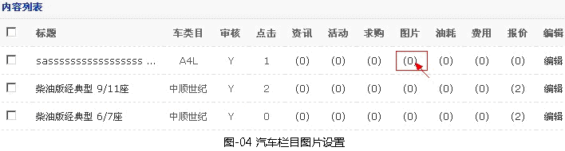
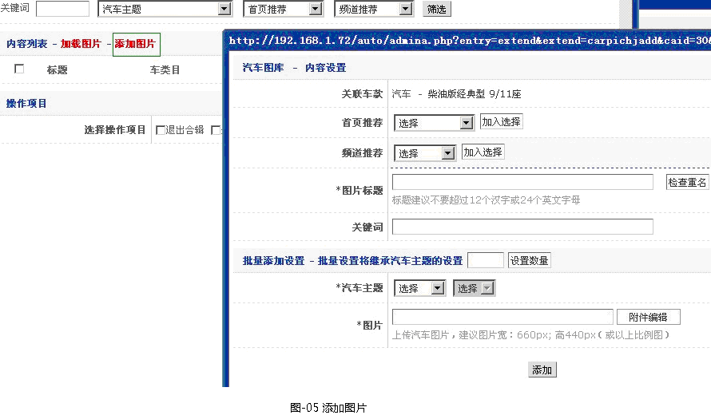
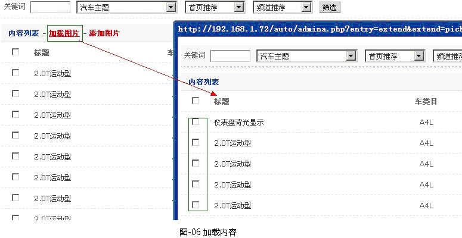
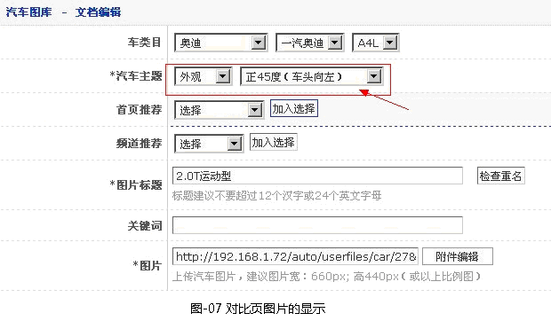
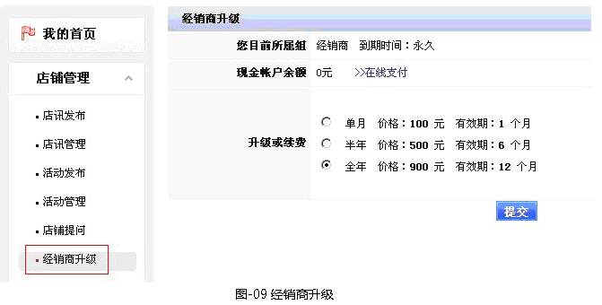

- 汽车系统常见问题有以下几点：
-
答：汽车图片均要属于某个车款，所以系统不提供图片栏目处进行添加，但可以对图片进生编辑; 添加图片方法：【常规内容】->【车型频道】->【新车】->选择某个车款->【图片】。如图-04所示

->【添加图片】

注:添加图片即属于本车款，此图片也可以属于其它车款(同一个车型共用一张车款图片)，操作方式如下
->【加载内容】

汽车图片在设置相关的主题才能显示出来，操作如下：

答：会员中心在线购买;
后台具体设置操作
1. 管理后台设置相关信息方法【系统设置】->【汽车网参数】->在此修改相关信息。如图-08所示

2. 会员中心经销商购买操作：【店铺管理】->【经销商升级】。如图-09所示

答：可以自动绑定模板的，在添加新的类系和栏目前设置： 管理后台 > 模板风格 >模板管理>基本设置>关闭自动生成节点为否。
※提示：
1.能自绑定模板的节点可以参考《汽车绑定节点说明》文档。
2.在不添加情况下[关闭自动生成节点]设为是;如果打开会消耗一定是系统资源。